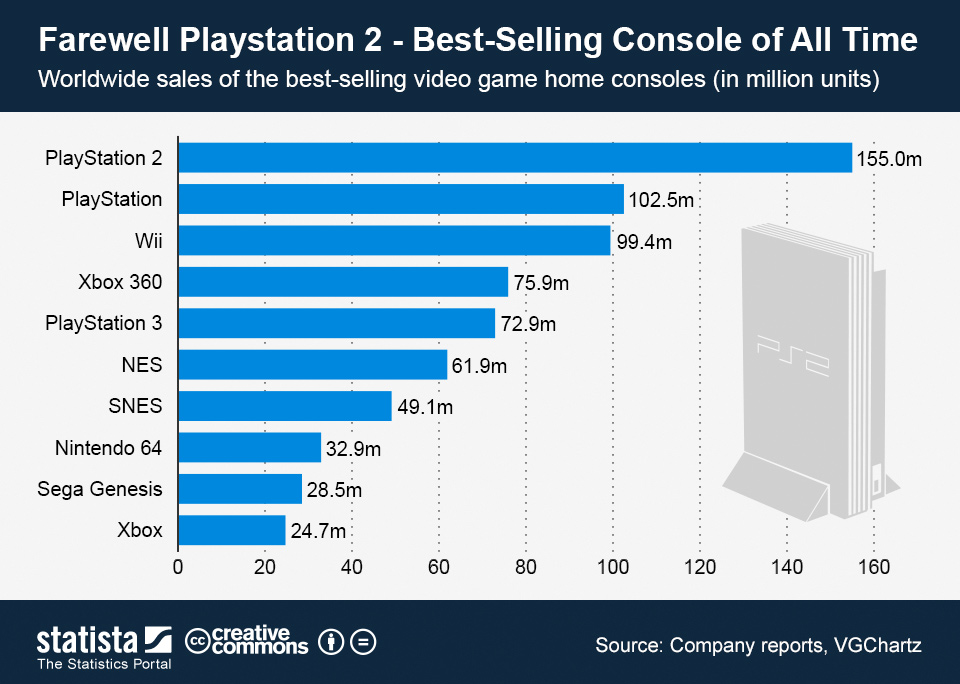
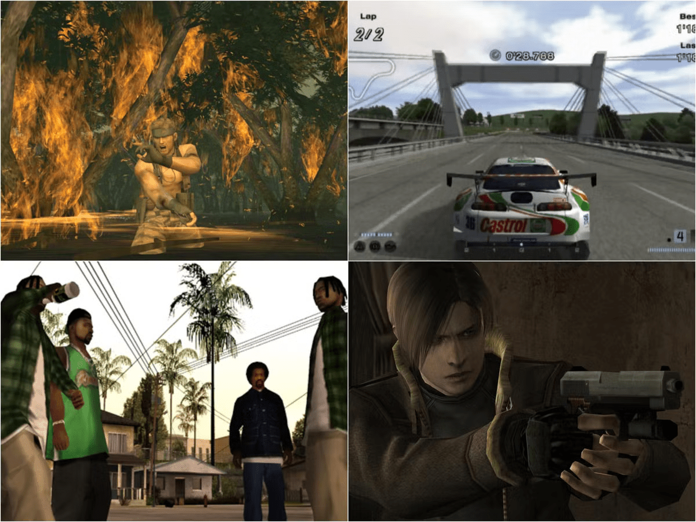

History
The PlayStation 2(PS2) is a home video game console developed and marketed by Sony Computer Entertainment. It was first released in Japan on 4 March 2000, in North America on 26 October 2000, in Europe on 24 November 2000, and in Australia on 30 November 2000. It is the successor to the original PlayStation, as well as the second installment in the PlayStation brand of consoles. As a sixth-generation console, it competed with Nintendo's GameCube, and Microsoft's Xbox. It is the best-selling video game console of all time, having sold over 155 million units worldwide.
Announced in 1999, Sony began developing the console after the immense success of its predecessor. The PS2 offered backward-compatibility for its predecessor's DualShock controller, as well as its games.
The PlayStation 2 received widespread critical acclaim upon release. A total of over 4,000 game titles were released worldwide, with over 1.5 billion copies sold. In 2004, Sony released a smaller, lighter revision of the console known as the PS2 Slim. Even after the release of its successor, the PlayStation 3, it remained popular well into the seventh generation. It continued to be produced until 2013 when Sony finally announced that it had been discontinued after over twelve years of production, one of the longest lifespans of any video game console. New games for the console continued to be made until the end of its life.
Game library
PlayStation 2 software is distributed on CD-ROM and DVD-ROM, the two formats are differentiated by their discs' bottoms, with CD-ROMs being blue and DVD-ROMs being silver. The PlayStation 2 offered some particularly high-profile exclusive games. Most main entries in the Grand Theft Auto, Final Fantasy, and Metal Gear Solid series were released exclusively for the console. Several prolific series got their start on the PlayStation 2, including God of War, Ratchet & Clank, Jak and Daxter, Devil May Cry, Kingdom Hearts and Sly Cooper. Grand Theft Auto: San Andreas was the best-selling game on the console.
Game releases peaked in 2004, but declined with the release of the PlayStation 3 in 2006. The last new games for the console were Final Fantasy XI: Seekers of Adoulin in Asia, FIFA 14 in North America and Pro Evolution Soccer 2014 in Europe. As of 30 June 2007, a total of 10,035 software titles had been released worldwide including games released in multiple regions as separate titles.